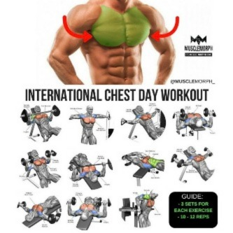
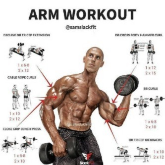
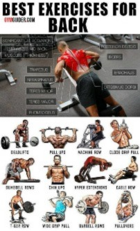
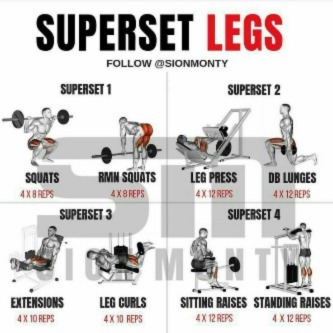

Acceuil
Blog
Contact
Clearly, sports can help you reach your fitness goals and maintain a healthy weight. However, they also encourage healthy decision-making such as not smoking and not drinking. Sports also have hidden health benefits such as lowering the chance of osteoporosis or breast cancer later in life.
Cardio is all about delivering more oxygen throughout your body especially to your brain. This effect can help reduce your brain’s stress response, stimulate new connections between brain cells, lower your risk for memory loss and diseases like dementia, and help you focus on the current moment. Aerobic exercise reduces the risk of many conditions. These conditions include obesity, heart disease, high blood pressure, type 2 diabetes, metabolic syndrome, stroke and certain types of cancer. Weight-bearing aerobic exercises, such as walking, help lower the risk of osteoporosis.